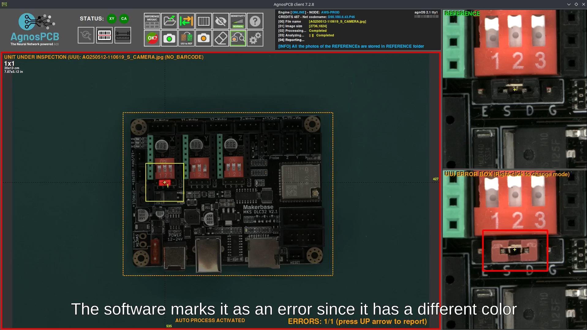
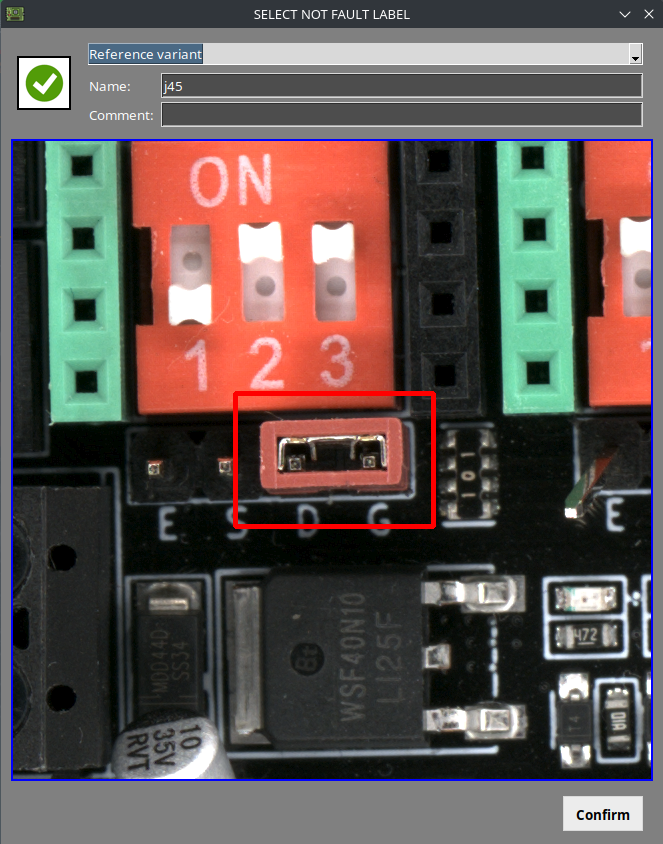
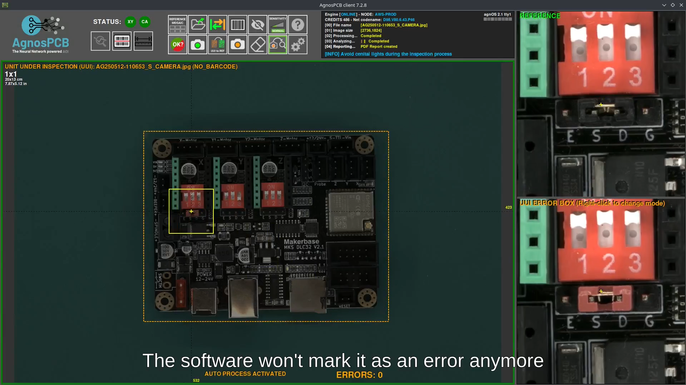
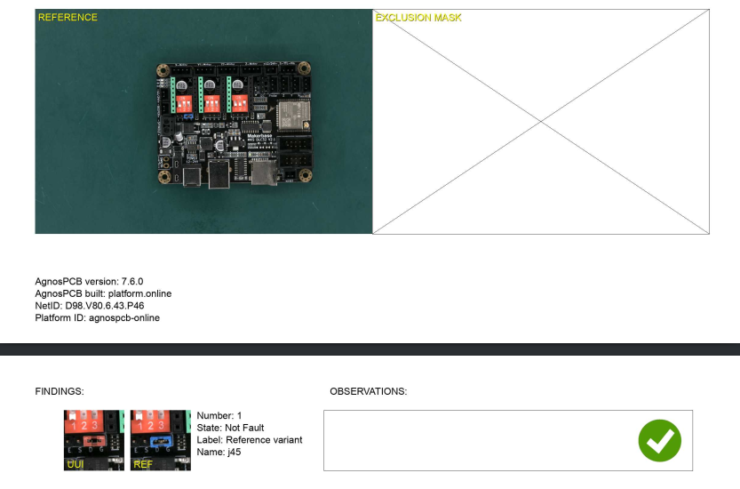

Referenzvarianten
Bei der Inspektion einer Leiterplatte (PCB) können einige Bauteile vom Referenzbild abweichen und vom System als Fehler erkannt werden (z. B. aufgrund von Änderungen in der Bauteilversorgung oder Unterschieden in der Beschriftung).
Durch das Markieren dieses Fehlertyps als Referenzvariante erkennt das System ihn bei zukünftigen Inspektionen und meldet ihn nicht mehr als Fehler.
Video
Für eine vollständige Einführung in diese Funktion sehen Sie sich das folgende Video an:
1. Inspektion starten
Erstellen Sie ein Referenzbild oder wählen Sie eines aus dem Repository aus. Platzieren Sie anschließend das UUI und starten Sie die Inspektion.
2. Fehler identifizieren
Navigieren Sie mit den Pfeiltasten links/rechts (←/→) zu dem erkannten Fehler.

3. Als Referenzvariante klassifizieren
Drücken Sie die Pfeiltaste nach unten (↓), um den Fehler abzulehnen. Wählen Sie im Klassifizierungsbereich Reference variant aus.

Es erscheint ein Dialogfenster, in dem Sie einen Namen für die neue Variante eingeben müssen (erforderlich) und optional eine Beschreibung hinzufügen können. Klicken Sie anschließend auf Confirm.
Ergebnis
Nach der Klassifizierung wird die Referenzvariante gespeichert und mit dem Referenzbild verknüpft. Gespeicherte Varianten können durch Öffnen eines gespeicherten Referenzbildes angezeigt werden. Sie werden im rechten Seitenbereich unterhalb der vergrößerten Referenzansicht angezeigt. In diesem Bereich können Varianten aktiviert, deaktiviert oder gelöscht werden.

Diese Variante wird bei zukünftigen Inspektionen nicht mehr als Fehler gemeldet.
Achtung
Für jede Position auf der Leiterplatte, an der die Abweichung auftritt, muss eine Referenzvariante manuell erstellt werden. Das System wendet die Variante nicht automatisch auf identische Bauteile an anderen Positionen an.

Auch nach dem Erstellen einer Referenzvariante erkennt das System weiterhin tatsächliche Defekte an diesem Bauteil, sofern diese auftreten.
Der abschließende Inspektionsbericht enthält ebenfalls die Referenzvariante zusammen mit ihrem Bild, dem vergebenen Namen und eventuellen zusätzlichen Anmerkungen.
